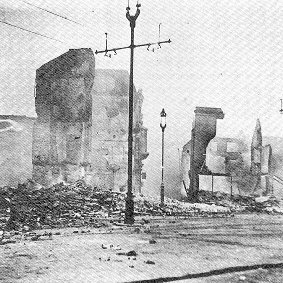

In the aftermath of Bloody Sunday and the Kilmichael ambush, the government decided on 8 December 1920 to declare martial law in four counties: Cork, Kerry, Limeick and Tipperary. Lord French signed the proclamation on 10 December. It entailed a total of outlook, and "handed over the whole administration of the law to soldiers".
General Macready was in favour of the move and forced the hand of rcently appointed Chief Secretary, Sir Hamar Greenwood, to support it as well. However, the position of the IRC, the Black and Tans and the Auxiliaries wsa not made clear under the new regulations. It was assumed that they would still act "independently" of the army. This was a grave weakness in the regulations, as shown immediatley, when, on the night of 11 December 1920, a group of Auxilaries went on a rampage in Cork City. Some hours previously the IRA had ambushed a group of RIC near Victoria Barracks, and the Auxiliaries were clearly were clearly bent on reprisal. They visited first a numkber of public houses and helped themselves to free drink. Then, just hours after curfew, they set fire to shops, and houses in Patrick Street and other parts of the City. The City Hall and Carnegie Library also went up in flames. Sir Hamar Greenwood told the House of Commons that Cork had been burnt down "by its own citizens". However, later the government paid £3 million compensation to the people of Cork for the damage done by the Crown Forces to their city.